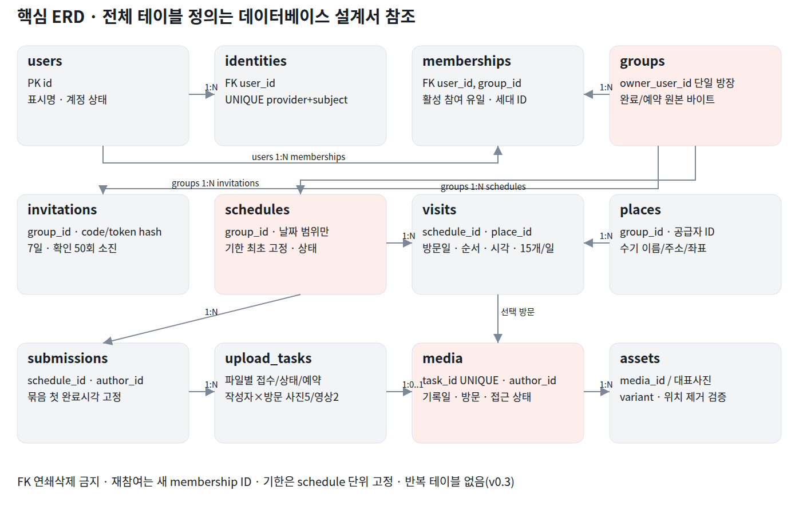

1차 개발 구현 설계 v0.3.2 · 기준 기능명세서 v2.2(2026-10-30) 우선 · 2026-10-30
PostgreSQL16 물리 설계 v0.3.2(반복 테이블 제거·초대 횟수·방문 15개·사진5/영상2 트리거). 컬럼별 정의의 원천은 도구/physical_model.py이며 부록/DB/001_initial.sql과 이 사전을 함께 생성한다. 초기 스키마와 DB 제약은 임시 DB에서 실행 검증했다. FK는 ON DELETE NO ACTION, 서버 역할은002_service_roles.sql을 따른다. API/worker의 업무 권한·검사·집계·최종 완료는 별도 구현 및 통합 검수가 필요하다.

| 부모 | 자식 | 관계 |
|---|---|---|
| users | identities | 1:N |
| users | memberships | 1:N |
| groups | memberships | 1:N |
| groups | invitations | 1:N |
| groups | schedules | 1:N |
| schedules | visits | 1:N |
| places | visits | 1:N |
| schedules | day_plans | 1:N |
| schedules | submissions | 1:N |
| submissions | upload_tasks | 1:N |
| upload_tasks | media | 1:0..1 |
| media | assets | 1:N |
| visits | media | 1:N optional |
| users | media | author 1:N |
| groups | reentry_blocks | 1:N |
| users | personal_blocks | 1:N |
식별자는UUID, 순간은timestamptz(UTC저장), 기록일·방문일·일정의날짜는date, 표시는Asia/Seoul이다. 순수날짜를기기UTC Date 변환으로계산하지않는다.
모든수정대상은version을갖고초기1에서증가한다. 보관고정·소유자·완료시각·최초선택순서는수정가능정보와분리한다.
문자길이는SQL char_length가아닌NFC후grapheme단위애플리케이션검증을기준으로한다. DB의text크기/체크는보조장치다.
집계캐시는가속용이다. 사용자가볼수있는파일조건(완료·기한·삭제·운영·차단)과같은predicate로응답집계를구성한다.
representative cover는별도asset이며일반기록바이트/보관정책과혼동하지않는다. 모임종료후불필요한대표사진·계획은정리한다.
관련 기능: F01 F02 F24
| 컬럼 | 타입·NULL·기본값·컬럼제약 | 정의 원천 | 설명 |
|---|---|---|---|
| id | uuid PRIMARY KEY DEFAULT gen_random_uuid() | DDL 참조 | 내부 불변 식별자 |
| display_name | text NOT NULL CHECK (btrim(display_name) <> '' AND display_name !~ E'[\n\r]') | DDL 참조 | NFC 후 grapheme 1~20은 API 검증 |
| status | text NOT NULL DEFAULT 'onboarding' CHECK (status IN ('onboarding','active','restricted','deleting','deleted')) | DDL 참조 | 계정 생명주기 |
| version | bigint NOT NULL DEFAULT 1 CHECK (version > 0) | DDL 참조 | API가 expectedVersion 검증 후 +1 |
| created_at | timestamptz NOT NULL DEFAULT now() | DDL 참조 | 서버 생성 시각 |
| deleted_at | timestamptz | DDL 참조 | 개인정보 정리 시각 |
인덱스: CREATE INDEX users_status_idx ON users(status)
삭제는 tombstone 후 개인정보 정리. 타인 파일로의 연쇄삭제 금지.
계정별 생성·방장수신·탈퇴는 users 행 잠금으로 직렬화한다.
관련 기능: F01
| 컬럼 | 타입·NULL·기본값·컬럼제약 | 정의 원천 | 설명 |
|---|---|---|---|
| id | uuid PRIMARY KEY DEFAULT gen_random_uuid() | DDL 참조 | 내부 불변 식별자 |
| user_id | uuid NOT NULL REFERENCES users(id) ON DELETE NO ACTION | DDL 참조 | 참조 대상 |
| provider | text NOT NULL CHECK (provider IN ('kakao','google')) | DDL 참조 | 이메일 자동병합 없음 |
| provider_subject | text NOT NULL | DDL 참조 | 검증한 공급자 subject |
| linked_at | timestamptz NOT NULL DEFAULT now() | DDL 참조 | 연결시각 |
| version | bigint NOT NULL DEFAULT 1 CHECK (version > 0) | DDL 참조 | API가 expectedVersion 검증 후 +1 |
인덱스: UNIQUE(provider,provider_subject); CREATE INDEX identities_user_idx ON identities(user_id)
이메일 일치로 자동 연결하지 않는다.
연결/해제는 user 잠금과 최근 재인증 필요. 마지막 수단은 유지한다.
관련 기능: F01 F24 F28
| 컬럼 | 타입·NULL·기본값·컬럼제약 | 정의 원천 | 설명 |
|---|---|---|---|
| id | uuid PRIMARY KEY DEFAULT gen_random_uuid() | DDL 참조 | 내부 불변 식별자 |
| user_id | uuid NOT NULL REFERENCES users(id) ON DELETE NO ACTION | DDL 참조 | 참조 대상 |
| device_id | text NOT NULL | DDL 참조 | 앱 설치별 임의 식별자 |
| refresh_hash | text NOT NULL UNIQUE | DDL 참조 | refresh 원문 미저장 |
| expires_at | timestamptz NOT NULL | DDL 참조 | 세션 만료 |
| revoked_at | timestamptz | DDL 참조 | 폐기 시각 |
| reauthenticated_at | timestamptz | DDL 참조 | 재인증 시각 |
| created_at | timestamptz NOT NULL DEFAULT now() | DDL 참조 | 서버 생성 시각 |
인덱스: CREATE INDEX sessions_user_idx ON sessions(user_id,revoked_at)
계정삭제/로그아웃에서 세션 폐기. API는 최신 계정 상태도 확인한다.
관련 기능: F02
| 컬럼 | 타입·NULL·기본값·컬럼제약 | 정의 원천 | 설명 |
|---|---|---|---|
| id | uuid PRIMARY KEY DEFAULT gen_random_uuid() | DDL 참조 | 내부 불변 식별자 |
| item_key | text NOT NULL | DDL 참조 | 동의 항목 |
| version | text NOT NULL | DDL 참조 | 불변 문서 버전 |
| required | boolean NOT NULL | DDL 참조 | 필수 여부 |
| content_ref | text NOT NULL | DDL 참조 | 문서 경로 |
| content_hash | text NOT NULL | DDL 참조 | 문서 SHA256 |
| effective_at | timestamptz NOT NULL | DDL 참조 | 적용시각 |
| created_at | timestamptz NOT NULL DEFAULT now() | DDL 참조 | 서버 생성 시각 |
인덱스: UNIQUE(item_key,version)
새 버전은 새 행. 기존 동의가 가리키는 내용을 덮어쓰지 않는다.
관련 기능: F02
| 컬럼 | 타입·NULL·기본값·컬럼제약 | 정의 원천 | 설명 |
|---|---|---|---|
| id | uuid PRIMARY KEY DEFAULT gen_random_uuid() | DDL 참조 | 내부 불변 식별자 |
| user_id | uuid NOT NULL REFERENCES users(id) ON DELETE NO ACTION | DDL 참조 | 참조 대상 |
| document_id | uuid NOT NULL REFERENCES consent_documents(id) ON DELETE NO ACTION | DDL 참조 | 참조 대상 |
| agreed | boolean NOT NULL | DDL 참조 | 동의/철회 |
| occurred_at | timestamptz NOT NULL DEFAULT now() | DDL 참조 | 서버 시각 |
| operation_id | uuid NOT NULL REFERENCES operations(id) ON DELETE NO ACTION | DDL 참조 | 참조 대상 |
인덱스: UNIQUE(operation_id,document_id); CREATE INDEX consent_events_user_idx ON consent_events(user_id,document_id,occurred_at DESC)
append-only. 실제 수집/처리와 연결한 문서·항목을 운영 배포 전에 확정한다.
관련 기능: F03 F04 F22 F23 F28
| 컬럼 | 타입·NULL·기본값·컬럼제약 | 정의 원천 | 설명 |
|---|---|---|---|
| id | uuid PRIMARY KEY DEFAULT gen_random_uuid() | DDL 참조 | 내부 불변 식별자 |
| name | text NOT NULL CHECK (btrim(name) <> '') | DDL 참조 | grapheme 1~50, 공개 전 검사 |
| owner_user_id | uuid NOT NULL REFERENCES users(id) ON DELETE NO ACTION | DDL 참조 | 참조 대상 |
| status | text NOT NULL DEFAULT 'active' CHECK (status IN ('active','closed')) | DDL 참조 | 종료 후 재개 불가 |
| cover_asset_id | uuid | DDL 참조 | assets 생성 후 지연 FK 연결 |
| activity_at | timestamptz NOT NULL DEFAULT now() | DDL 참조 | 공동 활동만 갱신 |
| completed_bytes | bigint NOT NULL DEFAULT 0 CHECK (completed_bytes >= 0) | DDL 참조 | 물리 정리 전 원본 포함 |
| reserved_bytes | bigint NOT NULL DEFAULT 0 CHECK (reserved_bytes >= 0) | DDL 참조 | 미완료 전송 예약 |
| version | bigint NOT NULL DEFAULT 1 CHECK (version > 0) | DDL 참조 | API가 expectedVersion 검증 후 +1 |
| created_at | timestamptz NOT NULL DEFAULT now() | DDL 참조 | 서버 생성 시각 |
| closed_at | timestamptz | DDL 참조 | 종료 확정시각 |
인덱스: CHECK(completed_bytes + reserved_bytes <= 5000000000); CHECK ((status='closed') = (closed_at IS NOT NULL)); CREATE INDEX groups_activity_idx ON groups(activity_at DESC,created_at DESC,id DESC)
owner는 활성 membership 사용자여야 함(지연 제약트리거/서비스 트랜잭션). 별도 role 컬럼으로 중복 원천을 만들지 않는다.
모임행 잠금으로 정원10명·종료·초대참여·저장량예약·역할변경을 직렬화한다.
삭제 대기 원본은 실제 정리 전 completed_bytes에 남는다.
관련 기능: F03 F05 F22 F23
| 컬럼 | 타입·NULL·기본값·컬럼제약 | 정의 원천 | 설명 |
|---|---|---|---|
| id | uuid PRIMARY KEY DEFAULT gen_random_uuid() | DDL 참조 | 내부 불변 식별자 |
| group_id | uuid NOT NULL REFERENCES groups(id) ON DELETE NO ACTION | DDL 참조 | 참조 대상 |
| user_id | uuid NOT NULL REFERENCES users(id) ON DELETE NO ACTION | DDL 참조 | 참조 대상 |
| joined_at | timestamptz NOT NULL DEFAULT now() | DDL 참조 | 재가입은 새 ID |
| ended_at | timestamptz | DDL 참조 | NULL이면 활성 |
| end_reason | text CHECK (end_reason IN ('left','removed','group_closed','account_deleted')) | DDL 참조 | 종료 사유 |
| version | bigint NOT NULL DEFAULT 1 CHECK (version > 0) | DDL 참조 | API가 expectedVersion 검증 후 +1 |
인덱스: CHECK ((ended_at IS NULL) = (end_reason IS NULL)); CREATE UNIQUE INDEX memberships_active_uq ON memberships(group_id,user_id) WHERE ended_at IS NULL; CREATE INDEX memberships_user_idx ON memberships(user_id,ended_at)
강제퇴장은 재참여차단을 같은 트랜잭션에 생성한다.
오래된 퇴장 요청은 target membershipId로 고정하여 새 참여를 종료하지 못한다.
관련 기능: F05 F22
| 컬럼 | 타입·NULL·기본값·컬럼제약 | 정의 원천 | 설명 |
|---|---|---|---|
| id | uuid PRIMARY KEY DEFAULT gen_random_uuid() | DDL 참조 | 내부 불변 식별자 |
| group_id | uuid NOT NULL REFERENCES groups(id) ON DELETE NO ACTION | DDL 참조 | 참조 대상 |
| user_id | uuid NOT NULL REFERENCES users(id) ON DELETE NO ACTION | DDL 참조 | 참조 대상 |
| created_by | uuid NOT NULL REFERENCES users(id) ON DELETE NO ACTION | DDL 참조 | 참조 대상 |
| cleared_at | timestamptz | DDL 참조 | 해제시각 |
| version | bigint NOT NULL DEFAULT 1 CHECK (version > 0) | DDL 참조 | API가 expectedVersion 검증 후 +1 |
| created_at | timestamptz NOT NULL DEFAULT now() | DDL 참조 | 서버 생성 시각 |
인덱스: CREATE UNIQUE INDEX reentry_blocks_active_uq ON reentry_blocks(group_id,user_id) WHERE cleared_at IS NULL
개인 차단과 독립. 방장만 해제하고 자동 재가입 없음.
관련 기능: F05
| 컬럼 | 타입·NULL·기본값·컬럼제약 | 정의 원천 | 설명 |
|---|---|---|---|
| id | uuid PRIMARY KEY DEFAULT gen_random_uuid() | DDL 참조 | 내부 불변 식별자 |
| group_id | uuid NOT NULL REFERENCES groups(id) ON DELETE NO ACTION | DDL 참조 | 참조 대상 |
| issuer_user_id | uuid NOT NULL REFERENCES users(id) ON DELETE NO ACTION | DDL 참조 | 참조 대상 |
| code_hash | text NOT NULL UNIQUE | DDL 참조 | 조회용 hash |
| token_hash | text NOT NULL UNIQUE | DDL 참조 | 링크 토큰 hash |
| code_ciphertext | bytea NOT NULL | DDL 참조 | 재조회용 암호문 |
| token_ciphertext | bytea NOT NULL | DDL 참조 | 재조회용 암호문 |
| issued_at | timestamptz NOT NULL DEFAULT now() | DDL 참조 | 발급 서버시각 |
| expires_at | timestamptz NOT NULL | DDL 참조 | 168시간 뒤 |
| revoked_at | timestamptz | DDL 참조 | 개별 취소 |
| use_count | integer NOT NULL DEFAULT 0 CHECK (use_count BETWEEN 0 AND 50) | DDL 참조 | 초대 확인(미리보기) 응답 횟수 |
| max_uses | integer NOT NULL DEFAULT 50 CHECK (max_uses = 50) | DDL 참조 | 소진 한도 |
| exhausted_at | timestamptz | DDL 참조 | 50회 도달 시각 |
| version | bigint NOT NULL DEFAULT 1 CHECK (version > 0) | DDL 참조 | API가 expectedVersion 검증 후 +1 |
인덱스: CHECK(expires_at = issued_at + interval '168 hours'); CHECK((use_count >= max_uses) = (exhausted_at IS NOT NULL)); CREATE INDEX invitations_group_idx ON invitations(group_id,issued_at DESC)
유효 범위 issued_at<=now<expires_at AND use_count<50. 반복 공유/참여로 갱신하지 않는다.
초대 확인(미리보기) 응답마다 행 잠금 후 use_count+1. 50 도달 시 exhausted_at 기록, 이후 확인·참여 거부. 참여 확정은 횟수를 소모하지 않는다.
8자리32문자 코드는 기술안. 링크는 별도128bit 이상 난수안, 발급 충돌 재추첨·조회 시도율 제한.
관련 기능: F06 F07 F08 F11 F21
| 컬럼 | 타입·NULL·기본값·컬럼제약 | 정의 원천 | 설명 |
|---|---|---|---|
| id | uuid PRIMARY KEY DEFAULT gen_random_uuid() | DDL 참조 | 내부 불변 식별자 |
| group_id | uuid NOT NULL REFERENCES groups(id) ON DELETE NO ACTION | DDL 참조 | 참조 대상 |
| title | text NOT NULL CHECK(btrim(title)<>'') | DDL 참조 | grapheme 1~100 |
| start_date | date NOT NULL | DDL 참조 | KST 시작 날짜 |
| end_date | date NOT NULL | DDL 참조 | KST 포함 종료 날짜. 시각·반복 없음 |
| status | text NOT NULL DEFAULT 'active' CHECK (status IN ('active','cancelled','deleted')) | DDL 참조 | 일정 상태 |
| cancelled_at | timestamptz | DDL 참조 | 취소 전 접수 비교 |
| cancelled_end_date | date | DDL 참조 | 취소 직전 종료일 |
| retention_fixed_at | timestamptz | DDL 참조 | 첫 완료에서 고정 |
| retention_last_date | date | DDL 참조 | 보관 마지막 날 |
| expires_at | timestamptz | DDL 참조 | 다음날 00:00 KST |
| version | bigint NOT NULL DEFAULT 1 CHECK (version > 0) | DDL 참조 | API가 expectedVersion 검증 후 +1 |
| created_at | timestamptz NOT NULL DEFAULT now() | DDL 참조 | 서버 생성 시각 |
인덱스: UNIQUE(id,group_id); CHECK(end_date >= start_date AND end_date-start_date <=365); CHECK(num_nonnulls(retention_fixed_at,retention_last_date,expires_at) IN (0,3)); CREATE INDEX schedules_calendar_idx ON schedules(group_id,start_date,end_date); CREATE INDEX schedules_expiry_idx ON schedules(expires_at) WHERE expires_at IS NOT NULL
반복·시각 컬럼 없음(2026-10-20 회의). 일정은 방장이 수동 추가·변경·취소·삭제한다.
기록·작업 있으면 삭제 금지(취소로 전환). 고정 필드는 null→값만 허용하는 트리거·갱신 권한으로 보호한다.
최초완료·일정변경·삭제·신규접수·방문추가는 일정행 잠금. 계산 기한이 이미 지났으면 완료 거부.
관련 기능: F09
| 컬럼 | 타입·NULL·기본값·컬럼제약 | 정의 원천 | 설명 |
|---|---|---|---|
| id | uuid PRIMARY KEY DEFAULT gen_random_uuid() | DDL 참조 | 내부 불변 식별자 |
| group_id | uuid NOT NULL REFERENCES groups(id) ON DELETE NO ACTION | DDL 참조 | 참조 대상 |
| provider | text NOT NULL CHECK(provider IN ('kakao','manual')) | DDL 참조 | 장소 원천 |
| provider_place_id | text | DDL 참조 | 공급자 ID |
| name | text NOT NULL CHECK(btrim(name)<>'') | DDL 참조 | grapheme 최대100 |
| address | text | DDL 참조 | grapheme 최대200 |
| latitude | numeric(9,6) CHECK(latitude BETWEEN -90 AND 90) | DDL 참조 | 선택 위도 |
| longitude | numeric(9,6) CHECK(longitude BETWEEN -180 AND 180) | DDL 참조 | 선택 경도 |
| normalized_fingerprint | text NOT NULL | DDL 참조 | 모임 내 중복 비교 |
| created_at | timestamptz NOT NULL DEFAULT now() | DDL 참조 | 서버 생성 시각 |
인덱스: UNIQUE(id,group_id); CHECK((latitude IS NULL)=(longitude IS NULL)); CHECK((provider='manual' AND provider_place_id IS NULL) OR (provider='kakao' AND provider_place_id IS NOT NULL)); CREATE INDEX places_provider_idx ON places(group_id,provider,provider_place_id)
이름만으로 병합하지 않는다. 공급자 보관·표시 조건은 실제 연동 전 확인한다.
관련 기능: F09 F10 F11 F14
| 컬럼 | 타입·NULL·기본값·컬럼제약 | 정의 원천 | 설명 |
|---|---|---|---|
| id | uuid PRIMARY KEY DEFAULT gen_random_uuid() | DDL 참조 | 내부 불변 식별자 |
| schedule_id | uuid NOT NULL REFERENCES schedules(id) ON DELETE NO ACTION | DDL 참조 | 참조 대상 |
| place_id | uuid NOT NULL REFERENCES places(id) ON DELETE NO ACTION | DDL 참조 | 참조 대상 |
| visit_date | date NOT NULL | DDL 참조 | 방문일 |
| position | integer CHECK(position>=0) | DDL 참조 | 활성은 필수, 삭제 후 NULL |
| planned_time | time CHECK(planned_time<'24:00'::time AND extract(second FROM planned_time)=0 AND extract(minute FROM planned_time)::int%5=0) | DDL 참조 | 00:00~23:55 또는 NULL(시간 미정). 추가 시 입력, 날짜별 활성 방문 15개 트리거 |
| dedupe_key | text NOT NULL | DDL 참조 | 공급자 ID 또는 정규화 수기정보 |
| deleted_at | timestamptz | DDL 참조 | 빈 방문 삭제 tombstone |
| version | bigint NOT NULL DEFAULT 1 CHECK (version > 0) | DDL 참조 | API가 expectedVersion 검증 후 +1 |
| created_at | timestamptz NOT NULL DEFAULT now() | DDL 참조 | 서버 생성 시각 |
인덱스: UNIQUE(id,schedule_id,visit_date); UNIQUE(schedule_id,visit_date,position) DEFERRABLE INITIALLY DEFERRED; CHECK((deleted_at IS NULL)=(position IS NOT NULL)); CREATE UNIQUE INDEX visits_active_dedupe_uq ON visits(schedule_id,visit_date,dedupe_key) WHERE deleted_at IS NULL
기록/작업 있는 방문 삭제 불가. 기간 축소 시 기존 방문은 기간 밖으로 유지.
일정×방문일별 활성 방문 최대 15개(P12). 트리거가 일정행 잠금 후 count를 검사해 VISIT_LIMIT를 올린다.
예정 시각은 추가 시 입력(선택)하며 일정에는 시각이 없다.
관련 기능: F10
| 컬럼 | 타입·NULL·기본값·컬럼제약 | 정의 원천 | 설명 |
|---|---|---|---|
| schedule_id | uuid NOT NULL REFERENCES schedules(id) ON DELETE NO ACTION | DDL 참조 | 참조 대상 |
| plan_date | date NOT NULL | DDL 참조 | 정리·필터 속성 |
| title | text | DDL 참조 | 빈값은 날짜 표시, 최대30 graphemes |
| version | bigint NOT NULL DEFAULT 1 CHECK (version > 0) | DDL 참조 | API가 expectedVersion 검증 후 +1 |
| created_at | timestamptz NOT NULL DEFAULT now() | DDL 참조 | 서버 생성 시각 |
인덱스: PRIMARY KEY(schedule_id,plan_date)
날짜 전체 공통 메모 없음. 순서·시각·제목은 같은 버전으로 저장.
관련 기능: F14 F15 F16
| 컬럼 | 타입·NULL·기본값·컬럼제약 | 정의 원천 | 설명 |
|---|---|---|---|
| id | uuid PRIMARY KEY DEFAULT gen_random_uuid() | DDL 참조 | 내부 불변 식별자 |
| schedule_id | uuid NOT NULL REFERENCES schedules(id) ON DELETE NO ACTION | DDL 참조 | 참조 대상 |
| author_user_id | uuid NOT NULL REFERENCES users(id) ON DELETE NO ACTION | DDL 참조 | 참조 대상 |
| first_completed_at | timestamptz | DDL 참조 | 첫 완료 이후 불변 |
| created_at | timestamptz NOT NULL DEFAULT now() | DDL 참조 | 서버 생성 시각 |
인덱스: UNIQUE(id,schedule_id,author_user_id); CREATE INDEX submissions_sort_idx ON submissions(schedule_id,first_completed_at DESC,id DESC)
완료0개 묶음은 공동 목록에 표시하지 않는다. 묶음순서는 후속완료로 바뀌지 않는다.
관련 기능: F14 F15 F20 F26
| 컬럼 | 타입·NULL·기본값·컬럼제약 | 정의 원천 | 설명 |
|---|---|---|---|
| id | uuid PRIMARY KEY DEFAULT gen_random_uuid() | DDL 참조 | 내부 불변 식별자 |
| submission_id | uuid | DDL 참조 | 기록일 때 필수 |
| schedule_id | uuid | DDL 참조 | 기록일 때 필수 |
| author_user_id | uuid NOT NULL REFERENCES users(id) ON DELETE NO ACTION | DDL 참조 | 참조 대상 |
| cover_group_id | uuid REFERENCES groups(id) ON DELETE NO ACTION | DDL 참조 | 참조 대상 |
| client_file_id | text NOT NULL | DDL 참조 | 후보별 클라이언트 ID |
| selection_index | integer CHECK(selection_index BETWEEN 0 AND 119) | DDL 참조 | 기록일 때 필수 |
| kind | text NOT NULL CHECK(kind IN ('photo','video')) | DDL 참조 | 선언 종류, 서버 probe와 대조. 작성자×방문 사진5/영상2 트리거 |
| fingerprint | text NOT NULL CHECK(fingerprint ~ '^[0-9a-f]{64}$') | DDL 참조 | 원본 SHA256 |
| checksum | text CHECK(checksum ~ '^[0-9a-f]{64}$') | DDL 참조 | 서버 전체 파일 SHA256 |
| record_date | date | DDL 참조 | 기록일 때 필수 |
| visit_id | uuid | DDL 참조 | 미지정 가능 |
| description | text NOT NULL DEFAULT '' | DDL 참조 | 최대1000 graphemes |
| accepted_at | timestamptz NOT NULL DEFAULT now() | DDL 참조 | 원래 접수, retry로 변경 금지 |
| state | text NOT NULL DEFAULT 'queued' CHECK (state IN ('queued','uploading','verifying','review','complete','failed','cancelled')) | DDL 참조 | 서버 업무 상태 |
| reserved_bytes | bigint NOT NULL CHECK(reserved_bytes>=0) | DDL 참조 | 현재 예약량 |
| declared_bytes | bigint NOT NULL CHECK(declared_bytes BETWEEN 1 AND 200000000) | DDL 참조 | 원본 예정 크기 |
| actual_bytes | bigint CHECK(actual_bytes>=0) | DDL 참조 | 서버 확인 원본 크기 |
| quarantine_key | text NOT NULL | DDL 참조 | 비공개 원본 또는 청크 prefix |
| upload_offset | bigint NOT NULL DEFAULT 0 CHECK(upload_offset>=0) | DDL 참조 | DB가 확정한 누적 바이트 |
| upload_generation | integer NOT NULL DEFAULT 1 CHECK(upload_generation>0) | DDL 참조 | 재시도 transport 세대 |
| transport_expires_at | timestamptz NOT NULL | DDL 참조 | 재개 세션 만료 |
| chunk_manifest | jsonb NOT NULL DEFAULT '[]'::jsonb CHECK(jsonb_typeof(chunk_manifest)='array') | DDL 참조 | 불변 청크 key/offset/size/hash |
| error_code | text | DDL 참조 | 파일별 실패 |
| cancel_requested_at | timestamptz | DDL 참조 | 취소 선행 여부 |
| version | bigint NOT NULL DEFAULT 1 CHECK (version > 0) | DDL 참조 | API가 expectedVersion 검증 후 +1 |
| created_at | timestamptz NOT NULL DEFAULT now() | DDL 참조 | 서버 생성 시각 |
인덱스: UNIQUE(submission_id,selection_index); UNIQUE(id,schedule_id,author_user_id,submission_id); FOREIGN KEY(submission_id,schedule_id,author_user_id) REFERENCES submissions(id,schedule_id,author_user_id) ON DELETE NO ACTION; FOREIGN KEY(visit_id,schedule_id,record_date) REFERENCES visits(id,schedule_id,visit_date) ON DELETE NO ACTION; CHECK((cover_group_id IS NULL AND submission_id IS NOT NULL AND schedule_id IS NOT NULL AND record_date IS NOT NULL AND selection_index IS NOT NULL) OR (cover_group_id IS NOT NULL AND submission_id IS NULL AND schedule_id IS NULL AND record_date IS NULL AND selection_index IS NULL AND visit_id IS NULL)); CHECK(upload_offset<=declared_bytes); CREATE INDEX upload_tasks_author_idx ON upload_tasks(author_user_id,state); CREATE INDEX upload_tasks_schedule_idx ON upload_tasks(schedule_id,state)
파일교체/신규추가로 취소일정 예외를 우회할 수 없다.
결과확인필요는 로컬 관찰 상태로 서버 영속 enum에 포함하지 않는다. 상태를 확인해 복원한다.
작성자×방문(미지정은 작성자×일정×기록일) 사진5·영상2(P11). 트리거가 advisory lock 후 활성 task+available media를 합산해 MEDIA_LIMIT를 올린다. 실패/취소 task는 즉시 제외.
submission_id 또는 cover_group_id 중 정확히 하나. 대표사진 완료는 현재방장·그룹버전·규격·위치제거·검사 재검증 후 asset 생성하며 media/submission은 생성하지 않는다.
관련 기능: F16 F17 F18 F19 F21
| 컬럼 | 타입·NULL·기본값·컬럼제약 | 정의 원천 | 설명 |
|---|---|---|---|
| id | uuid PRIMARY KEY DEFAULT gen_random_uuid() | DDL 참조 | 내부 불변 식별자 |
| task_id | uuid NOT NULL UNIQUE | DDL 참조 | 업로드 작업당 완료 1회 |
| submission_id | uuid NOT NULL | DDL 참조 | 묶음 |
| schedule_id | uuid NOT NULL | DDL 참조 | 일정 |
| author_user_id | uuid NOT NULL REFERENCES users(id) ON DELETE NO ACTION | DDL 참조 | 참조 대상 |
| record_date | date NOT NULL | DDL 참조 | 정리용 기록일 |
| visit_id | uuid | DDL 참조 | 미지정 가능 |
| description | text NOT NULL DEFAULT '' | DDL 참조 | 최대1000 graphemes |
| kind | text NOT NULL CHECK(kind IN ('photo','video')) | DDL 참조 | 파일 종류 |
| mime | text NOT NULL | DDL 참조 | 서버 probe 결과 |
| original_bytes | bigint NOT NULL CHECK(original_bytes>0) | DDL 참조 | 원본 업로드 바이트 |
| captured_at | timestamptz | DDL 참조 | 촬영시각, 없는 값 생성 금지 |
| completed_at | timestamptz NOT NULL | DDL 참조 | 공개 완료시각 |
| selection_index | integer NOT NULL CHECK(selection_index BETWEEN 0 AND 119) | DDL 참조 | 최초 선택 순서 |
| access_state | text NOT NULL DEFAULT 'available' CHECK(access_state IN ('available','deleted','expired','restricted')) | DDL 참조 | 접근 상태 |
| moderation_state | text NOT NULL CHECK(moderation_state IN ('passed','review','restricted')) | DDL 참조 | 운영 상태 |
| deleted_at | timestamptz | DDL 참조 | 새 접근 차단 |
| purged_at | timestamptz | DDL 참조 | 실제 원본/파생 정리 완료 |
| version | bigint NOT NULL DEFAULT 1 CHECK (version > 0) | DDL 참조 | API가 expectedVersion 검증 후 +1 |
| created_at | timestamptz NOT NULL DEFAULT now() | DDL 참조 | 서버 생성 시각 |
인덱스: FOREIGN KEY(task_id,schedule_id,author_user_id,submission_id) REFERENCES upload_tasks(id,schedule_id,author_user_id,submission_id) ON DELETE NO ACTION; FOREIGN KEY(visit_id,schedule_id,record_date) REFERENCES visits(id,schedule_id,visit_date) ON DELETE NO ACTION; CREATE INDEX media_author_idx ON media(author_user_id,completed_at DESC,id DESC); CREATE INDEX media_schedule_idx ON media(schedule_id,record_date,visit_id)
기간 축소로 범위 밖 파일을 제거하지 않는다. 신규 정보 지정만 범위를 검증한다.
사용자별 visible count는 차단/상태를 반영한 동일 predicate로 산출한다.
visit_id/record_date 변경(F17)은 대상 묶음의 P11 한도를 같은 트리거로 재검증한다. 시간순 정렬키는 COALESCE(captured_at,completed_at).
관련 기능: F04 F20
| 컬럼 | 타입·NULL·기본값·컬럼제약 | 정의 원천 | 설명 |
|---|---|---|---|
| id | uuid PRIMARY KEY DEFAULT gen_random_uuid() | DDL 참조 | 내부 불변 식별자 |
| media_id | uuid REFERENCES media(id) ON DELETE NO ACTION | DDL 참조 | 참조 대상 |
| cover_group_id | uuid REFERENCES groups(id) ON DELETE NO ACTION | DDL 참조 | 참조 대상 |
| variant | text NOT NULL CHECK(variant IN ('original_private','sanitized_original','view','thumbnail')) | DDL 참조 | 원본 직접 배포 금지 |
| object_key | text NOT NULL UNIQUE | DDL 참조 | private key |
| bytes | bigint NOT NULL CHECK(bytes>0) | DDL 참조 | 객체 크기 |
| checksum | text NOT NULL | DDL 참조 | 객체 SHA256 |
| location_verified_absent | boolean NOT NULL DEFAULT false | DDL 참조 | 위치 제거 검증 |
| probe_result | jsonb NOT NULL | DDL 참조 | 길이·회전·음성·형식 검사 |
| state | text NOT NULL DEFAULT 'staged' CHECK (state IN ('staged','ready','delete_pending','purged')) | DDL 참조 | 객체 상태 |
| created_at | timestamptz NOT NULL DEFAULT now() | DDL 참조 | 서버 생성 시각 |
인덱스: CHECK(num_nonnulls(media_id,cover_group_id)=1); CHECK(state<>'ready' OR variant='original_private' OR location_verified_absent); CREATE INDEX assets_media_idx ON assets(media_id,variant)
original_private는 API로 전달 금지. 접근은 인증 프록시를 통해 현재 상태 재검증.
대표사진과 media 순환참조는 지연 FK 또는 완성 뒤 연결로 처리한다.
관련 기능: F17
| 컬럼 | 타입·NULL·기본값·컬럼제약 | 정의 원천 | 설명 |
|---|---|---|---|
| id | uuid PRIMARY KEY REFERENCES operations(id) ON DELETE NO ACTION | DDL 참조 | 공통 operationId와 동일 |
| author_user_id | uuid NOT NULL REFERENCES users(id) ON DELETE NO ACTION | DDL 참조 | 참조 대상 |
| schedule_id | uuid NOT NULL REFERENCES schedules(id) ON DELETE NO ACTION | DDL 참조 | 참조 대상 |
| targets | jsonb NOT NULL | DDL 참조 | 1~120개의 id/expectedVersion |
| fields | jsonb NOT NULL | DDL 참조 | apply/value |
| state | text NOT NULL DEFAULT 'pending_check' CHECK (state IN ('pending_check','review','applying','succeeded','failed')) | DDL 참조 | 내부 상태 |
| item_errors | jsonb | DDL 참조 | 대상별 미적용 사유 |
| result | jsonb | DDL 참조 | typed MetadataChangeResult |
| created_at | timestamptz NOT NULL DEFAULT now() | DDL 참조 | 서버 생성 시각 |
인덱스: CREATE INDEX metadata_operations_author_idx ON metadata_operations(author_user_id,state)
외부 검사 중 DB잠금을 잡지 않는다. 통과 후 모든 대상 재잠금·버전 재검증·단일 커밋.
관련 기능: F25
| 컬럼 | 타입·NULL·기본값·컬럼제약 | 정의 원천 | 설명 |
|---|---|---|---|
| blocker_user_id | uuid NOT NULL REFERENCES users(id) ON DELETE NO ACTION | DDL 참조 | 참조 대상 |
| blocked_user_id | uuid NOT NULL REFERENCES users(id) ON DELETE NO ACTION | DDL 참조 | 참조 대상 |
| created_at | timestamptz NOT NULL DEFAULT now() | DDL 참조 | 서버 생성 시각 |
인덱스: PRIMARY KEY(blocker_user_id,blocked_user_id); CHECK(blocker_user_id<>blocked_user_id)
자기차단 금지. 방장역할·모임 재참여차단·타인 화면과 독립.
관련 기능: F25 F26 F28
| 컬럼 | 타입·NULL·기본값·컬럼제약 | 정의 원천 | 설명 |
|---|---|---|---|
| id | uuid PRIMARY KEY DEFAULT gen_random_uuid() | DDL 참조 | 내부 불변 식별자 |
| reporter_user_id | uuid REFERENCES users(id) ON DELETE NO ACTION | DDL 참조 | 참조 대상 |
| type | text NOT NULL CHECK(type IN ('report','scan','appeal','inquiry')) | DDL 참조 | 운영 케이스 |
| target_type | text NOT NULL | DDL 참조 | media/cover/member 등 |
| target_id | uuid NOT NULL | DDL 참조 | 유형별 서비스 검증 |
| reason | text NOT NULL | DDL 참조 | 최대2000 graphemes |
| status | text NOT NULL DEFAULT 'received' CHECK (status IN ('received','reviewing','decided','closed')) | DDL 참조 | 운영 상태 |
| evidence_ref | text | DDL 참조 | 암호화 최소 증거 |
| review_due_at | timestamptz NOT NULL | DDL 참조 | 최초24h/이의3영업일 |
| closed_at | timestamptz | DDL 참조 | 종료시각 |
| evidence_delete_at | timestamptz | DDL 참조 | 종료 후90일 이내 |
| version | bigint NOT NULL DEFAULT 1 CHECK (version > 0) | DDL 참조 | API가 expectedVersion 검증 후 +1 |
| created_at | timestamptz NOT NULL DEFAULT now() | DDL 참조 | 서버 생성 시각 |
인덱스: CHECK(evidence_delete_at IS NULL OR (closed_at IS NOT NULL AND evidence_delete_at<=closed_at+interval '90 days')); CREATE INDEX cases_queue_idx ON reports_and_cases(status,review_due_at)
신고자 신원·증거는 운영권한 외 노출 금지. 접수만으로 자동삭제 없음.
관련 기능: F27
| 컬럼 | 타입·NULL·기본값·컬럼제약 | 정의 원천 | 설명 |
|---|---|---|---|
| id | uuid PRIMARY KEY DEFAULT gen_random_uuid() | DDL 참조 | 내부 불변 식별자 |
| group_id | uuid NOT NULL REFERENCES groups(id) ON DELETE NO ACTION | DDL 참조 | 참조 대상 |
| requester_id | uuid NOT NULL REFERENCES users(id) ON DELETE NO ACTION | DDL 참조 | 참조 대상 |
| candidate_membership_id | uuid NOT NULL REFERENCES memberships(id) ON DELETE NO ACTION | DDL 참조 | 참조 대상 |
| owner_snapshot | uuid NOT NULL REFERENCES users(id) ON DELETE NO ACTION | DDL 참조 | 참조 대상 |
| group_version | bigint NOT NULL | DDL 참조 | 신청 당시 버전 |
| candidate_consent_at | timestamptz | DDL 참조 | 후임 별도 동의 |
| notified_at | timestamptz | DDL 참조 | 실제 통지 성공 |
| response_due_at | timestamptz | DDL 참조 | 통지+168시간 |
| reason | text NOT NULL | DDL 참조 | 부재 사유 |
| evidence_refs | jsonb NOT NULL DEFAULT '[]'::jsonb | DDL 참조 | 최소 증거 |
| state | text NOT NULL DEFAULT 'received' CHECK (state IN ('received','verifying','notified','waiting','held','approved','rejected','applied')) | DDL 참조 | 복구 상태 |
| decision_reason | text | DDL 참조 | 수동 근거 |
| version | bigint NOT NULL DEFAULT 1 CHECK (version > 0) | DDL 참조 | API가 expectedVersion 검증 후 +1 |
| created_at | timestamptz NOT NULL DEFAULT now() | DDL 참조 | 서버 생성 시각 |
인덱스: CHECK((notified_at IS NULL AND response_due_at IS NULL) OR (notified_at IS NOT NULL AND response_due_at=notified_at+interval '168 hours')); CREATE INDEX recovery_group_idx ON recovery_requests(group_id,state)
7일 자동승인 금지. 종료모임 재개 불가. 조치 직전 최신 상태 재검증.
관련 기능: F25 F26 F27
| 컬럼 | 타입·NULL·기본값·컬럼제약 | 정의 원천 | 설명 |
|---|---|---|---|
| id | uuid PRIMARY KEY DEFAULT gen_random_uuid() | DDL 참조 | 내부 불변 식별자 |
| user_id | uuid NOT NULL REFERENCES users(id) ON DELETE NO ACTION | DDL 참조 | 참조 대상 |
| case_id | uuid REFERENCES reports_and_cases(id) ON DELETE NO ACTION | DDL 참조 | 참조 대상 |
| recovery_request_id | uuid REFERENCES recovery_requests(id) ON DELETE NO ACTION | DDL 참조 | 참조 대상 |
| kind | text NOT NULL | DDL 참조 | 복구통지·운영결과 |
| payload | jsonb NOT NULL | DDL 참조 | 최소 문구/대상 ID |
| created_at | timestamptz NOT NULL DEFAULT now() | DDL 참조 | 서버 생성 시각 |
| read_at | timestamptz | DDL 참조 | 읽음시각 |
인덱스: CHECK(num_nonnulls(case_id,recovery_request_id)=1); CREATE INDEX account_notifications_user_idx ON account_notifications(user_id,created_at DESC)
일정 알림/외부 캘린더 동기화/만료 푸시 기능으로 확장하지 않는다.
관련 기능: F03 F05 F08 F15 F17 F18 F24
| 컬럼 | 타입·NULL·기본값·컬럼제약 | 정의 원천 | 설명 |
|---|---|---|---|
| id | uuid PRIMARY KEY DEFAULT gen_random_uuid() | DDL 참조 | 내부 불변 식별자 |
| actor_id | uuid NOT NULL REFERENCES users(id) ON DELETE NO ACTION | DDL 참조 | 참조 대상 |
| idempotency_key | text NOT NULL | DDL 참조 | 네트워크 멱등키 |
| route | text NOT NULL | DDL 참조 | operationId |
| request_hash | text NOT NULL | DDL 참조 | 정규화 요청 SHA256 |
| kind | text NOT NULL | DDL 참조 | 업무 결과 종류 |
| state | text NOT NULL DEFAULT 'pending' CHECK (state IN ('pending','review','succeeded','failed')) | DDL 참조 | 진행 상태 |
| response_snapshot | jsonb | DDL 참조 | 응답 재사용, 토큰 등 민감값 별도 암호화 |
| created_at | timestamptz NOT NULL DEFAULT now() | DDL 참조 | 서버 생성 시각 |
| finished_at | timestamptz | DDL 참조 | 확정시각 |
인덱스: UNIQUE(actor_id,route,idempotency_key); CREATE INDEX operations_actor_idx ON operations(actor_id,created_at DESC)
단기업무 멱등캐시 완료후7일은 기술안. 장기작업 고유ID/대상 고유제약은 수명동안 유지.
관련 기능: F15 F17 F18 F21 F24
| 컬럼 | 타입·NULL·기본값·컬럼제약 | 정의 원천 | 설명 |
|---|---|---|---|
| id | uuid PRIMARY KEY DEFAULT gen_random_uuid() | DDL 참조 | 내부 불변 식별자 |
| operation_id | uuid REFERENCES operations(id) ON DELETE NO ACTION | DDL 참조 | 참조 대상 |
| event_type | text NOT NULL | DDL 참조 | 도메인 이벤트 |
| target_id | uuid NOT NULL | DDL 참조 | 대상 |
| generation | bigint NOT NULL CHECK(generation>0) | DDL 참조 | 처리 세대 |
| payload | jsonb NOT NULL | DDL 참조 | 민감 원문 제외 |
| published_at | timestamptz | DDL 참조 | worker 인계확정 |
| created_at | timestamptz NOT NULL DEFAULT now() | DDL 참조 | 서버 생성 시각 |
인덱스: UNIQUE(event_type,target_id,generation); CREATE INDEX outbox_pending_idx ON outbox_events(created_at) WHERE published_at IS NULL
중복전달 전제. worker 소비자는 eventId/generation/taskId로 멱등 처리.
관련 기능: F18 F21 F23 F24
| 컬럼 | 타입·NULL·기본값·컬럼제약 | 정의 원천 | 설명 |
|---|---|---|---|
| id | uuid PRIMARY KEY DEFAULT gen_random_uuid() | DDL 참조 | 내부 불변 식별자 |
| target_type | text NOT NULL | DDL 참조 | 정리대상 유형 |
| target_id | uuid NOT NULL | DDL 참조 | 대상 ID |
| state | text NOT NULL DEFAULT 'queued' CHECK (state IN ('queued','running','failed','complete')) | DDL 참조 | 작업 상태 |
| attempts | integer NOT NULL DEFAULT 0 CHECK(attempts>=0) | DDL 참조 | 시도 횟수 |
| generation | bigint NOT NULL CHECK(generation>0) | DDL 참조 | 오래된 이벤트 방어 |
| due_at | timestamptz NOT NULL | DDL 참조 | 논리차단+24h |
| finished_at | timestamptz | DDL 참조 | 물리정리 완료 |
| error_code | text | DDL 참조 | 재시도 이유 |
| created_at | timestamptz NOT NULL DEFAULT now() | DDL 참조 | 서버 생성 시각 |
인덱스: UNIQUE(target_type,target_id,generation); CREATE INDEX cleanup_queue_idx ON cleanup_jobs(state,due_at)
현재 삭제/만료 상태와 세대를 다시 확인하고 물리정리/바이트차감을 한번만 확정.
관련 기능: F26 F27
| 컬럼 | 타입·NULL·기본값·컬럼제약 | 정의 원천 | 설명 |
|---|---|---|---|
| id | uuid PRIMARY KEY DEFAULT gen_random_uuid() | DDL 참조 | 내부 불변 식별자 |
| operator_id | text NOT NULL | DDL 참조 | 별도 OIDC issuer/subject 식별 |
| case_id | uuid REFERENCES reports_and_cases(id) ON DELETE NO ACTION | DDL 참조 | 참조 대상 |
| recovery_request_id | uuid REFERENCES recovery_requests(id) ON DELETE NO ACTION | DDL 참조 | 참조 대상 |
| target_type | text NOT NULL | DDL 참조 | 대상 유형 |
| target_id | uuid NOT NULL | DDL 참조 | 대상 ID |
| action | text NOT NULL | DDL 참조 | 조치 |
| reason | text NOT NULL CHECK(btrim(reason)<>'') | DDL 참조 | 운영 근거 |
| before_state | jsonb NOT NULL | DDL 참조 | 최소 이전 상태 |
| after_state | jsonb NOT NULL | DDL 참조 | 최소 이후 상태 |
| occurred_at | timestamptz NOT NULL DEFAULT now() | DDL 참조 | 서버 시각 |
인덱스: CHECK(num_nonnulls(case_id,recovery_request_id)=1); CREATE INDEX operator_audit_target_idx ON operator_audit(target_id,occurred_at); CREATE INDEX operator_audit_actor_idx ON operator_audit(operator_id,occurred_at)
append-only. 앱 일반사용자 토큰으로 접근 불가. 보존기간은 운영 문서에서 실제 값으로 확정.
관련 기능: F19 F20
| 컬럼 | 타입·NULL·기본값·컬럼제약 | 정의 원천 | 설명 |
|---|---|---|---|
| id | uuid PRIMARY KEY DEFAULT gen_random_uuid() | DDL 참조 | 내부 불변 식별자 |
| user_id | uuid NOT NULL REFERENCES users(id) ON DELETE NO ACTION | DDL 참조 | 참조 대상 |
| purpose | text NOT NULL CHECK(purpose = 'save') | DDL 참조 | 휴대폰 저장만. share는 2026-10-20 회의로 폐지 |
| state | text NOT NULL DEFAULT 'preparing' CHECK (state IN ('preparing','ready','partial','failed')) | DDL 참조 | 준비 상태 |
| targets | jsonb NOT NULL | DDL 참조 | 1~120개 ID |
| results | jsonb NOT NULL DEFAULT '[]'::jsonb | DDL 참조 | 파일별 결과 |
| created_at | timestamptz NOT NULL DEFAULT now() | DDL 참조 | 서버 생성 시각 |
| expires_at | timestamptz NOT NULL | DDL 참조 | 준비결과24h, 실제 GET은 재권한검사 |
인덱스: CREATE INDEX export_jobs_user_idx ON export_jobs(user_id,created_at DESC)
파일GET은 매번 원본대상 현재참여·기한·차단·상태 재검증. 준비결과가 접근권을 부여하지 않는다.
| 불변식 | DB/API 강제 | 경쟁 검수 |
|---|---|---|
| 활성참여10명·중복없음 | group잠금+활성membership 부분UNIQUE | 9명동시2참여 |
| 초대 관리 현재 권한 | 현재 member·활성 모임·이용 제한 검증·발급자 ID는 이력 | 일반 참여자/타인 초대 취소·참여 종료 경합 |
| 초대 확인 50회 | invitations 행 잠금+use_count 증가·소진 트리거 | 49회 동시 두 확인 |
| 방문 15개/일 | schedule 잠금+visit_limit 트리거 | 14개 동시 두 추가 |
| 작성자 사진5/영상2 | advisory lock+media_limit 트리거(task+media 합산) | 같은 방문 동시 접수·F17 이동 |
| 방장한명·활성참여 | groups.owner_user_id단일원천+membership일치검사 | 이전/나가기/종료 경합 |
| 일정별최초기한고정 | schedule잠금+null→값트리거·업무권한 | 첫완료/변경 동시 |
| 용량5GB | group잠금+완료/예약CHECK | 동시접수/실패/취소/정리 |
| 파일완료1회 | media.task_id UNIQUE+task잠금 | 중복worker/완료취소 |
| 빈방문/일정삭제 | 접수/완료와같은잠금+숨김task포함조회 | 삭제/접수 경합 |
| 일괄수정원자성 | 검사후모든대상잠금·버전검증·단일커밋 | 검사중버전변경 |
| 오래된퇴장무효 | targetMembershipId고정+멱등결과 | 해제/재가입후재시도 |
논리차단→정리outbox→원본/파생본삭제→purged_at와용량반환을한번확정한다. 객체정리의부분실패는재시도하되접근을복구하지않는다. 백업최대30일, 복원은tombstone먼저반영후API를개방한다. 신고증거는암호화·최소권한·종료후최대90일로별도정리한다.